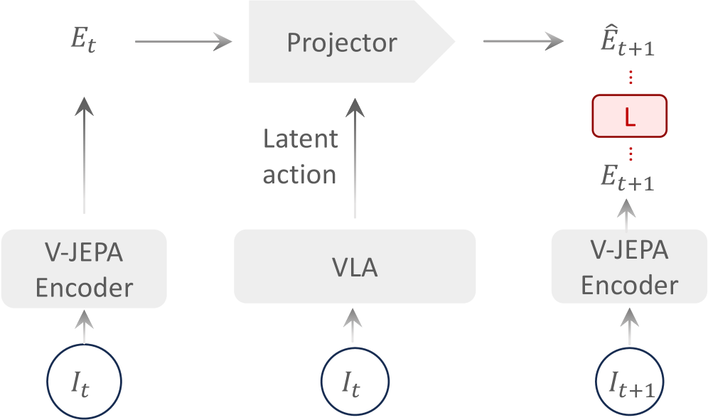
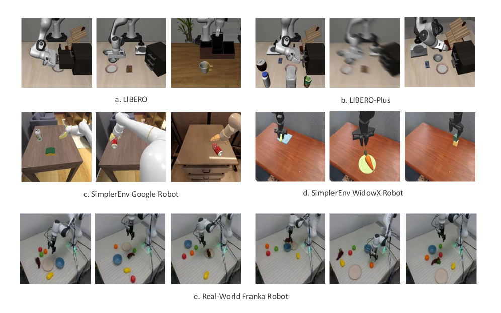
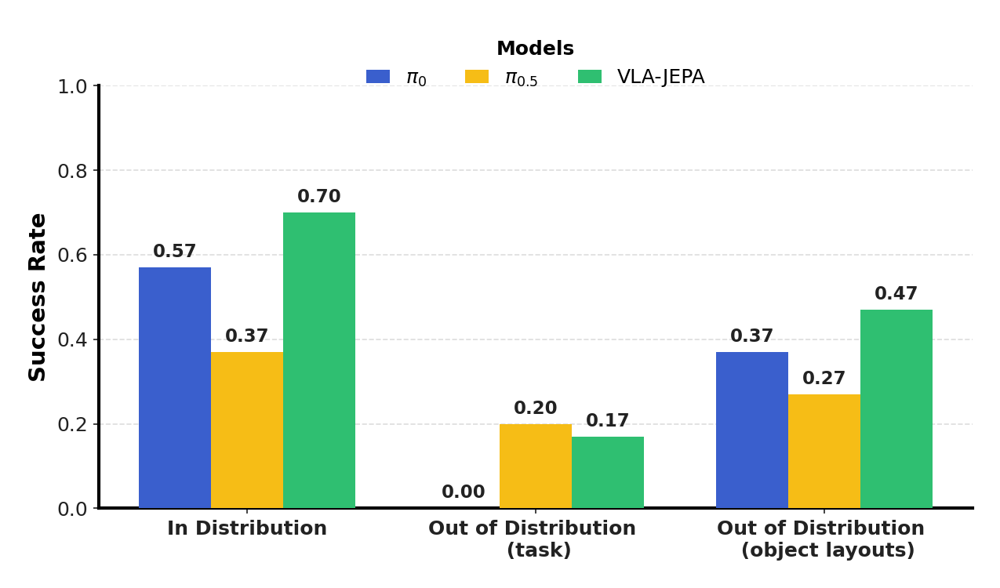
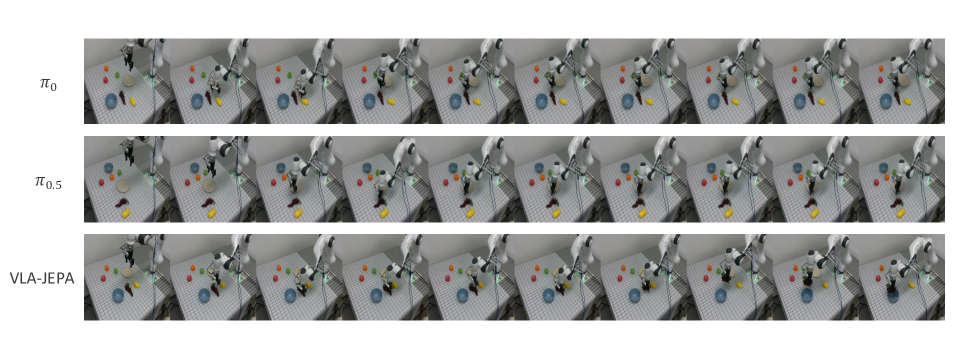
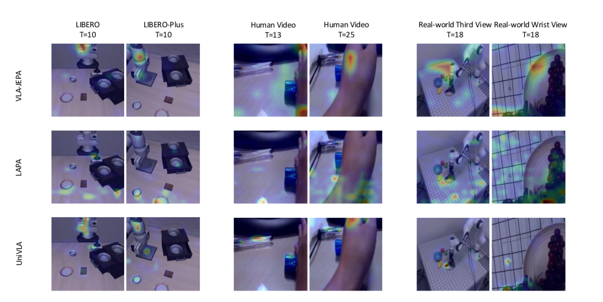

VLA-JEPA: Enhancing Vision-Language-Action Model with Latent World Model
1. 论文速览
| 论文要解决什么 | 互联网视频规模大但没有机器人动作标签；已有 latent-action 预训练容易学到像素差异、相机运动和背景变化，而不是对控制有用的状态转移语义。 |
|---|---|
| 作者的方法抓手 | 使用 leakage-free state prediction：future frame 只经过 target encoder 产生监督目标，student 只看当前观测和语言；预测目标在 latent space 中对齐，而不是重建像素。 |
| 最重要的结果 | LIBERO 平均成功率 97.2；LIBERO-Plus 在 7 类扰动中 5 类最佳，平均 79.5；SimplerEnv 在 Google Robot 上平均 65.2，在 WidowX 上平均 57.3；真实机器人 ID 与 object-layout OOD 均优于 $\pi_0$ 和 $\pi_{0.5}$。 |
| 阅读时要注意的点 | 这篇文章的核心不是“再加一个未来预测头”，而是把未来信息限制为 target，迫使 latent action token 承载从当前状态到未来 latent state 的解释变量；同时 action head 用 conditional flow matching 生成连续动作轨迹。 |
难度评级：★★★★☆。需要理解 VLA、latent action、JEPA/V-JEPA2、world model、causal attention、conditional flow matching，以及 LIBERO/SimplerEnv 等机器人评测。
关键词：Vision-Language-Action, JEPA, latent world model, latent action, human video pretraining, flow matching, LIBERO, SimplerEnv。
核心贡献清单
- 指出 latent-action 预训练的失配来源：像素目标、真实视频噪声运动、未来信息泄漏和多阶段训练复杂性，会让 latent action 偏离控制语义。
- 提出 VLA-JEPA：用 latent predictive alignment 学 action-relevant transition semantics，避免像素重建和 future leakage，并形成较简单的预训练流程。
- 在仿真与真实机器人中验证鲁棒性：覆盖 LIBERO、LIBERO-Plus、SimplerEnv 和真实 Franka 桌面操作，并包含 human-video ablation、attention map 和 future horizon 分析。

2. 动机
2.1 要解决什么问题
VLA 模型需要大量视觉、语言和动作数据，但 action-labeled robot data 采集昂贵且覆盖窄。相比之下，人类视频和互联网视频规模更大，包含丰富的时间变化。因此近期很多工作希望从无动作标签视频中学习 latent action，再迁移到机器人控制。
论文认为，问题在于很多 latent-action objective 学到的是“视觉变化的压缩表示”，而不是“在交互下可控状态如何演化”。对机器人来说，action 的价值不在于解释每个像素怎么变，而在于解释物体、手、工具、机器人等与任务相关的状态转移。
2.2 已有方法的四个失败模式
- Pixel-level objective 偏向外观：未来像素预测或 frame-difference compression 容易被纹理、光照、背景、视角等高方差但低控制因素主导。
- 真实世界视频放大噪声运动：human videos 和 in-the-wild footage 中，相机运动和非因果背景变化可能强过交互导致的状态变化。
- 信息泄漏导致 latent action 变成 shortcut：如果训练时 latent action module 同时看到当前帧和未来帧，它可能直接编码未来图像，而不是学习解释状态转移的变量。
- 多阶段 pipeline 脆弱：表征预训练、latent-action learning/alignment、policy learning 等多阶段流程会引入工程复杂度和阶段间不一致。
2.3 本文的解决思路
VLA-JEPA 的原则是：预测反映 action-relevant transition structure 的未来 latent state，同时禁止 future information 泄漏进 predictor。JEPA 的优势正好契合这一点：不重建像素，而是在 latent representation 层面对齐，从而天然降低低层噪声对目标的支配。
4. 方法详解
4.1 总体框架
VLA-JEPA 由三个主要部分组成：Qwen3-VL-2B VLM backbone、V-JEPA2-based latent world model、conditional flow-matching action head。预训练阶段从 Something-Something-v2 人类视频和 Droid 机器人数据学习 latent action；后训练/微调阶段在 LIBERO、SimplerEnv 或真实机器人数据上训练下游控制。
论文在正文中说采用 Qwen3-VL 作为核心 VLM，视觉编码器是 SigLIP-2；附录明确实现使用 Qwen3-VL-2B。世界状态目标来自 frozen V-JEPA2 encoder，predictor 随机初始化并训练。附录 Implementation Details
4.2 Model Backbone 与 latent tokens
为了让 VLM 输出 time-aware latent action 与 embodied action，作者向 Qwen3-VL 词表加入两类特殊 token：$\langle latent_i \rangle$ 和 $\langle action \rangle$。其中 $\langle latent_0 \rangle$ 表示 $s_0$ 到 $s_1$ 的状态转移；$\langle action \rangle$ 在机器人数据上作为 action head 的条件。
实际生成 latent action token 时，同一个 $\langle latent_i \rangle$ 会重复 $K$ 次，以增强模型对 latent action tokens 的注意力；附录给出 $K = 24/T$，其中 $T$ 是未来视频 horizon，24 是经验最优值。附录 VLA-JEPA Architecture
4.3 从 human videos 学 latent world model
对于无动作标签的人类视频，数据写作 $D=\{(O_0,O_1,\dots,O_v,\ell)\}$，$\ell$ 是语言描述，$O_v$ 是第 $v$ 个视角的视频帧序列。世界状态编码器先对每个视角用 V-JEPA2 encoder $F(\cdot)$ 得到表示，再把多视角表示拼接成统一 world state：
这个公式在做：把同一时刻不同视角的视觉状态合成一个 world-state latent。
$$s_{t_i}=\Vert_v F(I_{v,t_i})$$| $F(\cdot)$ | 单视角视频 encoder，论文采用 V-JEPA2。 |
| $I_{v,t_i}$ | 第 $v$ 个视角在时间 $t_i$ 的图像帧。 |
| $\Vert_v$ | 沿视角维度拼接 representation。 |
VLM 的 student pathway 只输入初始时刻多视角图像和语言，不输入未来帧。它把 learnable latent token 映射成状态转移表示：
这里 $z_{t_i}$ 是第 $i$ 个 latent action token 对应的 latent representation。关键是右侧没有未来帧，未来帧只出现在 target encoder 产生的监督目标里。
随后 world model 用历史 world states 和对应 latent action representations 预测未来状态 chunk：
world model 采用 time-causal attention：同一时间步内 latent action tokens 与 image latent tokens 双向全注意力；跨时间步严格 causal，只能看当前和过去。
4.4 JEPA 目标和信息泄漏控制
论文把训练目标解释成 semantic space 中 predictive log-likelihood 的 ELBO。由于 frozen V-JEPA2 encoder $F(\cdot)$ 产生 deterministic embeddings，KL 项在实践中消失，目标退化为 latent-space reconstruction/alignment loss。
论文原式没有写范数，结合上下文可理解为在 latent space 中对齐 predicted world state 与 target world state。报告中不额外假定未写明的具体距离形式。
这个设计避免两种常见 shortcut：一是不让模型直接重建像素，从而降低背景和相机 motion 的支配；二是不把未来帧喂给 student，因此 latent action 不会退化成未来图像压缩码。
4.5 机器人数据上的动作预测
在 action-labeled robot data 上，VLA-JEPA 同时保留 world modeling loss，并追加 embodied action token。VLM 输出全局 action-conditioning representation：
$z_a$ 作为 conditional flow-matching action head 的条件，和初始观测、语言、latent action 一起约束动作生成。
动作头用 DiT-B 风格 Transformer 建模连续动作轨迹分布。给定真实动作序列 $a_{0:H}$ 和高斯噪声 $\epsilon$，定义线性插值：
训练目标是让模型预测从噪声流向真实动作序列的 velocity field；推理时从噪声积分到动作空间，得到 $\hat{a}_{0:H}$。
机器人数据上的总目标为：
4.6 架构与训练超参
| Latent World Model 配置 | 值 |
|---|---|
| Transformer Layers | 12 |
| Attention heads | 8 |
| Image token dimension | 2048 |
| Number of image tokens per time step | 256 |
| Action token dimension | 2048 |
| Number of action tokens per time step | 3 |
| Number of views | 2 |
| Future video horizon | 8 |
| Action Head 配置 | 值 |
|---|---|
| Transformer Layers | 16 |
| Attention heads | 12 |
| Token dimension | 1024 |
| State dimension | 8 |
| Action dimension | 7 |
| Future action horizon | 7 |
| Positional encoding | Learnable |
| Denoising timesteps | 4 |
| 训练细节 | 论文/附录信息 |
|---|---|
| 图像尺寸 | VLM 输入 resize 到 224x224；world-state encoder 的 video clips resize 到 256x256。 |
| 动作归一化 | joint-position control 用 joint-space delta positions；end-effector control 用 delta positions 和 delta axis-angle；均 min-max 到 [0,1]；gripper binarized 到 {0,1}。 |
| 多视角处理 | 少于两个 camera views 时复制 world-state representation；多于两个 views 时选择两个用于 world-state representation。 |
| 训练硬件与 batch | 8 GPUs 并行，batch size 32，global batch size 256。 |
| 学习率 | cosine schedule + linear warmup；VLM 与 latent world model peak LR 1e-5；action head peak LR 1e-4。 |
| 训练步数 | SSv2+Droid 预训练 50K steps；仿真数据继续训练 30K steps；真实数据继续 fine-tune 20K steps。 |
5. 实验
5.1 实验设置
论文使用三类仿真 benchmark 和一个真实机器人环境：LIBERO 评估仿真 in-distribution manipulation；SimplerEnv 评估 real-to-sim gap；LIBERO-Plus 评估多维扰动鲁棒性；真实机器人使用 Franka Research 3 桌面 pick-and-place。作者比较最新 VLA baselines，包括 latent-action VLA、future-prediction VLA 和开源 VLA。

| 数据/阶段 | 使用方式 |
|---|---|
| Something-Something-v2 | 220K human videos；用于 action-free human video latent world modeling pretraining。 |
| Droid | 76K high-quality demonstration trajectories；用于 action-labeled robot data pretraining。 |
| LIBERO / LIBERO-Plus | 只使用 LIBERO 原始约 2K expert demonstrations 微调，不使用 LIBERO-Plus augmented dataset。 |
| SimplerEnv | 用 Fractal 与 BridgeV2 分别对应 SimplerEnv 的两种 embodiment post-training。 |
| Real-world | 100 demonstrations，覆盖 3 个 picking-and-placing tasks。 |
5.2 LIBERO 主结果
LIBERO 每个 task suite 中每个任务评估 50 episodes，每个 suite 500 episodes，报告 success rate。VLA-JEPA 在 4 个 suites 中有 2 个第一，平均成功率最高。
| 方法 | Spatial | Object | Goal | LIBERO-10 | Avg |
|---|---|---|---|---|---|
| LAPA | 73.8 | 74.6 | 58.8 | 55.4 | 65.7 |
| UniVLA | 96.5 | 96.8 | 95.6 | 92.0 | 95.2 |
| OpenVLA-OFT | 97.6 | 98.4 | 97.9 | 94.5 | 97.1 |
| $\pi_0$ | 96.8 | 98.8 | 95.8 | 85.2 | 94.2 |
| $\pi_{0.5}$ | 98.8 | 98.2 | 98.0 | 92.4 | 96.9 |
| VLA-JEPA | 96.2 | 99.6 | 97.2 | 95.8 | 97.2 |
| VLA-JEPA w/o human videos | 94.8 | 99.6 | 95.8 | 94.0 | 96.1 |
作者特别指出，OpenVLA-OFT 和 $\pi_{0.5}$ 等强 baseline 依赖大量 robot datasets pretraining；VLA-JEPA 用更少数据达到更高平均值。与 LAPA、UniVLA、villa-X、CoT-VLA 等 latent-action / human-video 方法相比，VLA-JEPA 的结果支持其对 pixel shortcut 与 leakage 的问题判断。
5.3 SimplerEnv 结果
SimplerEnv 包含 Google Robot 与 WidowX Robot 两组 visual matching 设置。VLA-JEPA 在 Google Robot 平均 65.2，为所有列出方法中最高；在 WidowX Robot 平均 57.3，与 LAPA 持平最高。
| 方法 | Google Pick | Google Move | Google Drawer | Google Place | Google Avg | WidowX Spoon | Carrot | Block | Eggplant | WidowX Avg |
|---|---|---|---|---|---|---|---|---|---|---|
| LAPA* | - | - | - | - | - | 70.8 | 45.8 | 54.2 | 58.3 | 57.3 |
| villa-X | 81.7 | 55.4 | 38.4 | 4.2 | 44.9 | 48.3 | 24.2 | 19.2 | 71.7 | 40.8 |
| RoboVLMs | 77.3 | 61.7 | 43.5 | 24.1 | 51.7 | 45.8 | 20.8 | 4.2 | 79.2 | 37.5 |
| $\pi_0$ | 72.7 | 65.3 | 38.3 | - | - | 29.1 | 0 | 16.6 | 62.5 | 40.1 |
| VLA-JEPA | 88.3 | 64.1 | 59.3 | 49.1 | 65.2 | 75.0 | 70.8 | 12.5 | 70.8 | 57.3 |
| VLA-JEPA w/o human videos | 85.3 | 66.7 | 75.5 | 86.1 | 78.4 | 75.0 | 54.2 | 20.8 | 79.2 | 57.3 |
这个表也提示一个重要边界：w/o human videos 在 SimplerEnv 的 Google Avg 反而更高。作者解释为 real-to-sim gap 和 ID 场景中，高质量 expert demonstrations 的影响可能大于 human video。
5.4 LIBERO-Plus 鲁棒性
LIBERO-Plus 将原 LIBERO 四个 suites 放入七类扰动：Camera、Robot、Language、Light、Background、Noise、Layout。VLA-JEPA 在 Robot、Language、Light、Background、Layout 五类第一，平均 79.5 第一。
| 方法 | Camera | Robot | Language | Light | Background | Noise | Layout | Avg |
|---|---|---|---|---|---|---|---|---|
| UniVLA | 1.8 | 46.2 | 69.6 | 69.0 | 81.0 | 21.2 | 31.9 | 42.9 |
| OpenVLA-OFT | 56.4 | 31.9 | 79.5 | 88.7 | 93.3 | 75.8 | 74.2 | 69.6 |
| $\pi_0$ | 13.8 | 6.0 | 58.8 | 85.0 | 81.4 | 79.0 | 68.9 | 53.6 |
| $\pi_0$-Fast | 65.1 | 21.6 | 61.0 | 73.2 | 73.2 | 74.4 | 68.8 | 61.6 |
| VLA-JEPA | 63.3 | 67.1 | 85.4 | 95.6 | 93.6 | 66.3 | 85.1 | 79.5 |
| VLA-JEPA w/o human videos | 40.3 | 55.7 | 72.9 | 88.2 | 70.5 | 38.2 | 74.6 | 62.9 |
这张表是 human video 价值最清楚的证据之一：VLA-JEPA full model 从 w/o human videos 的 62.9 提升到 79.5，尤其在 Background、Noise、Language、Layout 上差距明显。
5.5 真实机器人实验
真实设置使用 Franka Research 3、Robotiq 2F-85 gripper、三个 Intel RealSense D435 摄像头，其中两个第三人称视角和一个 wrist-mounted view。训练专家演示包括把 grapes、apples、mangoes、oranges 从桌上放入 plate 或 bowl。每个任务执行 10 次独立 trials，报告平均成功率。附录 Real-world Experiments Details

task-level OOD 包括：香蕉放入碗、桃子放到盘子、葡萄放到架子顶层。作者观察到：香蕉任务中 $\pi_{0.5}$ 与 VLA-JEPA 约 50% 成功；桃子任务因形状不规则，机器人常违反安全边界；架子任务中没有模型成功把末端放到顶层，但 VLA-JEPA 会从架子后侧接近并抬高末端，而 $\pi_0$ 与 $\pi_{0.5}$ 直接碰撞架子。
layout OOD 中，$\pi_0$ 与 $\pi_{0.5}$ 在抓取失败后不会重新打开 gripper 再抓；VLA-JEPA 会立即打开 gripper 并再次尝试。作者将其归因于 human videos 中存在大量 repeated grasping 行为。附录 Real-world Experiments Details

5.6 进一步分析与消融
Human video 的影响
论文的分析很克制：human videos 在 LIBERO 和 SimplerEnv 上不一定带来显著提升，甚至 w/o human videos 在 SimplerEnv 某些设置更强；但在 LIBERO-Plus 这类扰动鲁棒性场景中，human videos 明显提升稳定性。作者认为 human videos 主要增强已有技能的 robustness/stability，而不是直接引入新的 action execution capability。

Unified pretraining 的影响
作者可视化 LAPA、UniVLA、VLA-JEPA 的 latent action token 到 image token 的 attention。论文解释：LAPA 关注过密视觉信息和无关桌面物体，可能来自信息泄漏；UniVLA 借助文本语义缓解但会关注 stationary pen、tablecloth texture 等无关语义背景；VLA-JEPA 更集中于 robotic arm、hand 与 manipulated objects。

Future video horizon
| $T$ | Spatial | Object | Goal | LIBERO-10 | Avg |
|---|---|---|---|---|---|
| 4 | 95.0 | 99.2 | 95.8 | 89.0 | 94.8 |
| 8 | 94.8 | 99.8 | 95.8 | 94.0 | 96.1 |
| 16 | 92.8 | 98.8 | 98.0 | 92.2 | 95.5 |
作者希望 latent action 捕捉相邻帧间动态，latent action token 数始终等于帧数减一。$T=8$ 平均最好，论文解释为它接近预定义 action horizon；$T$ 太小信息不足，$T$ 太大引入冗余。
6. 可复现审计
代码与模型
有官方代码与模型入口：GitHub README 显示 partial training code、LIBERO/LIBERO-Plus/SimplerEnv evaluation code、custom dataset training code 已发布；Hugging Face 提供 checkpoints。README 也列出 Qwen3-VL-2B、V-JEPA2 encoder、SSv2、Droid、LIBERO、BridgeV2、Fractal 等依赖资源。
| 复现项 | 已给信息 | 状态 |
|---|---|---|
| 模型结构 | Qwen3-VL-2B；V-JEPA2 encoder；latent world model 与 action head 配置表完整。 | 充分 |
| 训练超参 | 图像尺寸、batch、GPU 数、学习率、schedule、训练步数、动作归一化、多视角处理均在附录给出。 | 较充分 |
| 数据 | SSv2、Droid、LIBERO、BridgeV2、Fractal 在 README 中给出下载链接；真实机器人 100 demos 无公开完整数据说明。 | 仿真较充分，真实实验有限 |
| 评测 | README 给出 LIBERO、LIBERO-Plus、SimplerEnv 环境准备、checkpoint 配置和 eval script。 | 充分 |
| 硬件 | 论文训练使用 8 NVIDIA A100 GPUs；README 说明 LIBERO 4 GPUs 并行，LIBERO-Plus/SimplerEnv 8 GPUs 并行，可按 GPU 数修改。 | 成本较高 |
7. 分析、局限与边界
7.1 这篇论文最有价值的地方
基于论文自身证据，最有价值的点是把 latent action 的学习目标从“解释像素差异”改成“在无泄漏条件下解释未来 latent state”。这使 human-video pretraining 的作用更接近“提升已有技能的鲁棒性和时序稳定性”，而不是把人类视频误当成可直接执行的机器人动作监督。LIBERO-Plus 和真实机器人 repeated grasping 观察，是这一点最直接的支撑。
7.2 结果为什么站得住
论文不是只报一个平均值，而是在 LIBERO、SimplerEnv、LIBERO-Plus 和真实机器人四类设置上测试，并且把 human videos、future horizon、attention map 做了拆解。尤其是 LIBERO-Plus 中 full model 与 w/o human videos 的差距，和 SimplerEnv 中 w/o human videos 反而更好的现象共同说明：作者没有把 human videos 泛化为万能增益，而是把收益边界定位在 robustness/stability 上。
7.3 论文明确写出的失败现象
- 真实 task OOD 中，VLA-JEPA 的 generalization 不如 $\pi_{0.5}$ 稳健；它缺乏细粒度 textual instruction reasoning，可能抓取与指令不匹配的物体。
- $\pi_{0.5}$ 更准确接触目标物体，但 position control 常违反机器人安全边界导致失败；VLA-JEPA 较少触发安全边界。
- 架子任务中，所有模型都未成功把末端放到顶层；VLA-JEPA 只表现出较不同的接近行为，并未完成任务。
- human video 对 ID 和 real-to-sim gap 场景不一定带来增益；高质量 expert demonstrations 在这些场景可能更关键。
7.4 适用边界
- VLA-JEPA 适用于能从视觉时序中获得有用 latent dynamics 的 manipulation setting；它没有证明对所有精细力控、长程规划或高语言推理任务都有效。
- 方法依赖强 VLM、V-JEPA2 encoder、A100 级训练资源和多个大数据集；完整从头复现实验成本高。
- 真实机器人只覆盖 100 demonstrations 和少量桌面任务；论文主要将真实结果作为物理部署证据，而不是大规模真实世界泛化证明。